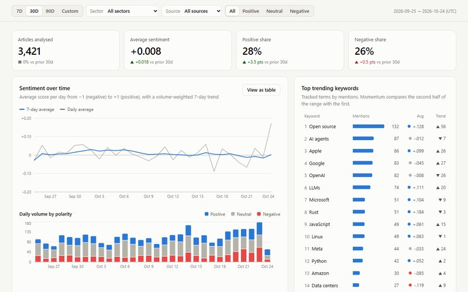
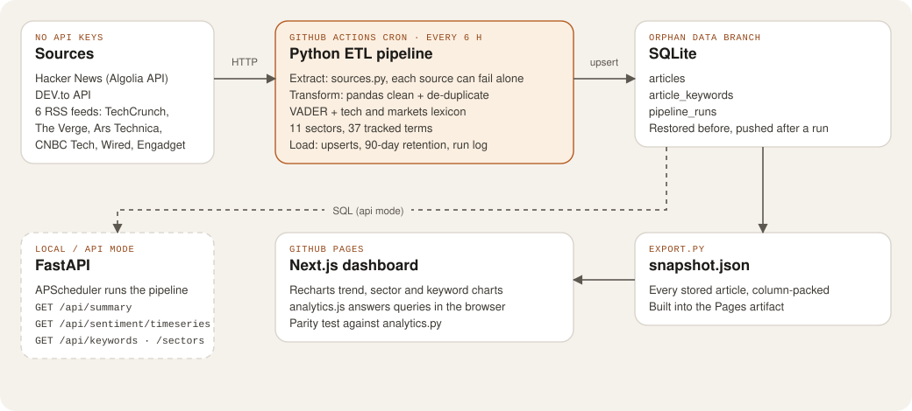

Work / Case study 05
Tech Trend Sentiment Tracker
An automated pipeline that collects tech and market headlines every six hours, scores their mood and charts how sectors and topics trend over time.
- Role
- Solo: pipeline, API, dashboard and scheduling
- When
- Built Oct 2026
- Size
- 8 sources, 11 sectors, 37 tracked terms, 26 pytest tests
- Hosting
- GitHub Actions cron + GitHub Pages, no server

The problem
I wanted to see how the mood of tech and market news shifts over weeks, by sector and by topic, rather than reading headlines one at a time. That needs data collected on a schedule, cleaned, scored and stored, and I wanted all of it to run for free with no server and no API keys.
My role
A personal project, built alone: the extract, transform and load pipeline, the sentiment rules, the FastAPI backend, the Next.js dashboard and the scheduled workflow.
Stack
- Pipeline
- Python, pandas, requests and feedparser
- Storage
- SQLite with upserts and 90-day retention
- Scoring
- The VADER word list plus my own tech and markets dictionary, negation and intensifier rules
- API
- FastAPI with APScheduler (local and self-hosted mode)
- Dashboard
- Next.js, Recharts, Tailwind CSS
- Delivery
- GitHub Actions cron, an orphan
databranch, GitHub Pages
Architecture
The dashboard reads from one data interface with two backends: FastAPI running SQL against SQLite, or, on GitHub Pages, a snapshot of every stored article that it queries in the browser.

articles, article_keywords and pipeline_runs. API routes include /api/summary, /api/sentiment/timeseries, /api/sectors, /api/keywords and /api/articles. Open the diagram full size.
The hard part: a stateful pipeline on stateless, free infrastructure
A scheduled pipeline needs somewhere to keep its database between runs, but a GitHub Actions runner starts empty every time and I didn’t want a paid database. The workflow restores tracker.db from an orphan data branch, runs the pipeline, then saves the database back as a single force-pushed commit, so binary history never piles up.
.github/workflows/pipeline.yml (shortened)
- name: Restore database from the data branch
run: |
if git fetch --depth=1 origin data; then
git show origin/data:tracker.db > data/tracker.db
fi
- name: Extract, transform, load
run: python -m pipeline.run --trigger ci
- name: Save database to the data branch
run: | # one orphan commit, force-pushed
git init -q -b data && git add tracker.db && git commit -q -m "Pipeline data"
git push -q -f "https://x-access-token:${{ github.token }}@github.com/${{ github.repository }}.git" dataThe workflow uses concurrency so two runs never write at once, and each source fails on its own: one dead RSS feed marks the run partial in pipeline_runs instead of losing the whole run.
Sentiment tools don’t speak tech
Off-the-shelf VADER scores “kill”, “hack” and “panic” as negative, but in tech news they’re usually neutral: “kill switch”, “Show HN: a weekend hack”, “kernel panic”. I neutralised that jargon, added a tech and markets dictionary (“plunges”, “outage”, “fined”), and kept negation and intensifier rules.
Two implementations, one answer
The Pages dashboard answers queries in JavaScript while the API uses Python, which is two chances to drift. tests/test_parity.py runs both on the same data across date ranges, sectors, polarity, source and search filters, and fails if any number differs.
What I tested
26 pytest tests cover sentiment rules (negation, intensifiers, phrases, tech jargon), cleaning and de-duplication, URL canonicalisation, sector and keyword tagging, idempotent upserts, re-scoring, partial-failure logging, the run lock, every API endpoint and its validation, and the Python and JavaScript parity check.
On 8 Nov the scheduled runs started failing. One test built articles dated from a fixed day, but the pipeline prunes anything older than 90 days by the real clock, so after two weeks one test article aged out. Because tests gate the pipeline, the dashboard stopped refreshing until the test was changed to date its rows from today (pull request #3).
How it ships
- One workflow, three jobs: the pipeline workflow runs every six hours, on every push to
mainand on demand (with an optional backfill). It runs the tests first, then the pipeline, then deploys. A failing test stops the run before any data or deploy changes. - Deploy: the pipeline job exports
snapshot.json, builds the static dashboard and uploads it, and the last job publishes it to GitHub Pages. - Hosting: no server at all. The data lives on a branch, the compute is GitHub Actions and the site is GitHub Pages.
What I’d do next
- Run the tests on pull requests too, so a change is checked before it reaches
mainrather than on the next scheduled run. - Improve tagging. Sectors come from keyword dictionaries, so about half of Hacker News’s long tail lands in “General Tech”.
- Add a keep-alive. GitHub pauses scheduled workflows in repositories with no activity for 60 days.